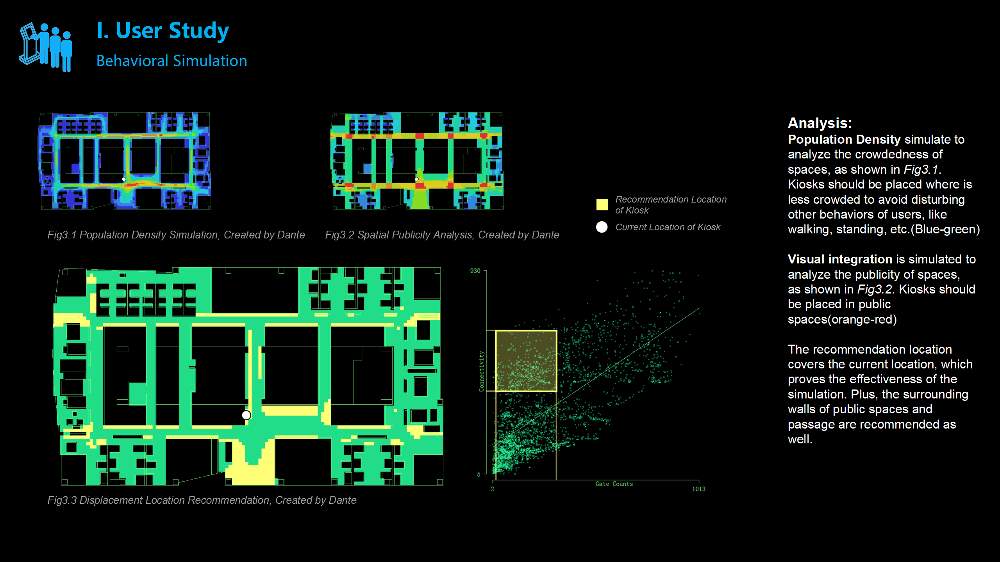
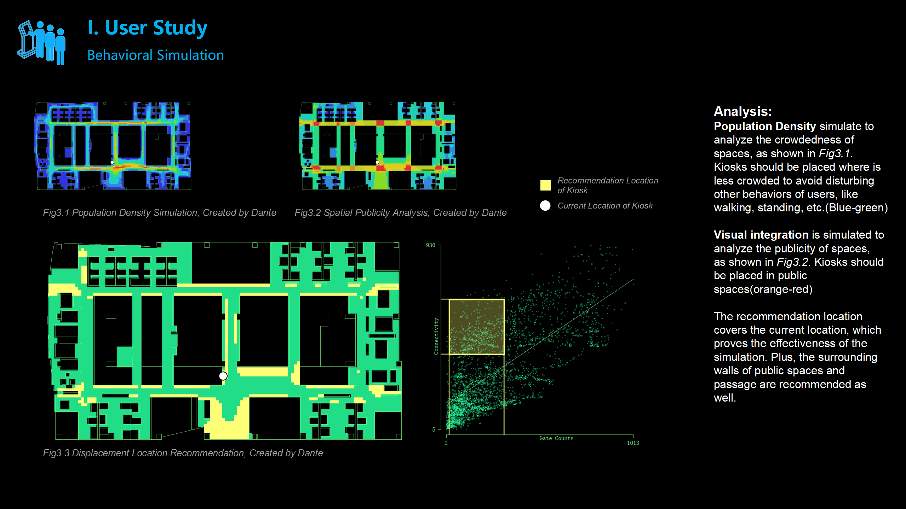
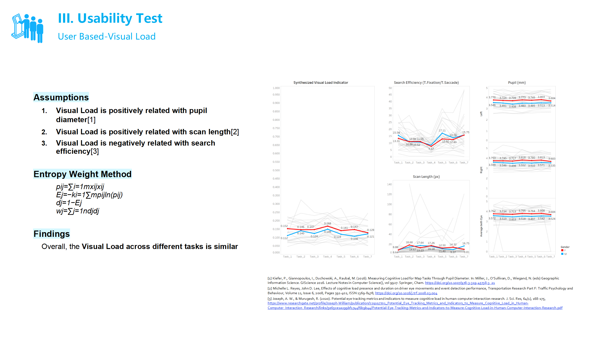
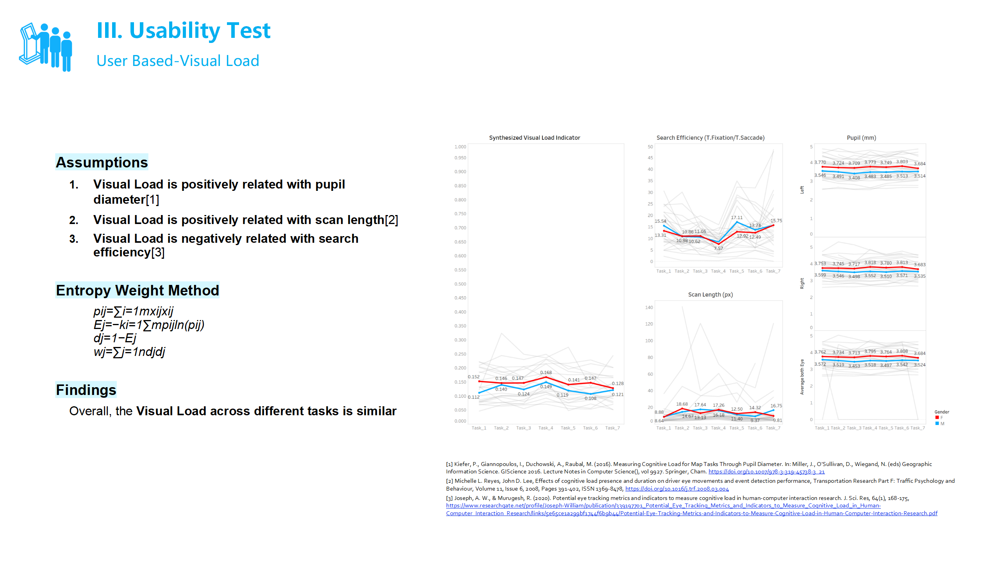

The project originated from the collaboration between the Georgia Institute of Technology's Human-Computer Interaction program and COX Enterprises. The sponsor's requirement was to design a UX system for their technical support terminals' touchscreens and carry out evaluation and iteration. Our work primarily focused on three stages: user research, design development, and usability testing.
1. User Study
The core issues during the user research phase were twofold: first, optimizing the core functionality of the terminal for technical support, and second, identifying additional features that could be integrated into the terminal. We employed task decomposition, competitive product analysis, user surveys, semi-structured interviews, and diary studies to conduct our research. In total, we collected 18 user surveys and conducted 8 semi-structured interviews, from which we identified 6 user needs and 7 specific design goals.
2. Design Development
After defining the features based on the user research, we established an accessibility grid for the user interface according to ergonomic standards. This led to 2 design iterations. The first iteration focused on sketching out the functional design within the design team. During the second iteration, we introduced target tasks and feedback from one employee. After these 2 iterations, we finalized the high-fidelity design for the project and moved into the usability testing phase.
3. Usability Tests
We conducted usability testing using both expert reviews and user tests. The experts included three team members from other COX teams and one from the Georgia Tech HCI project, who provided feedback using heuristic evaluation. For the user testing, we recruited 32 participants to perform task tests, eye-tracking, and complete the SUS usability questionnaire, with 12 participants providing interview feedback.
In quantifying user experience, we constructed an evaluation framework that integrated task completion time and eye-tracking metrics. The eye-tracking data was processed using entropy-based selection to aggregate micro-level metrics. Additionally, we analyzed the fixation points based on the previously defined accessibility grid, and found that the interface performed with 84.67% accessibility.
The evaluation results indicated that the current user interface did not sufficiently address the needs of female users, with a usability rating of only 71.4% for this group. Based on the usability testing, we identified 15 specific improvement measures for further iteration.
Keywords: Quantitative UX Research, Cognitive Load, Ergonomic Study, Eye-tracking
Project Type：Sponsorship Project of Human-Computer Interaction Program, Georgia Institute of Technology
Time: 2024.8-2024.12
Instructor：Dr.Carrie Bruce
Collaborator: Christine Taylor、Isabella Sirianni、Jeremy Chen
Main Contributions:
1. Led semi-structured interviews with 5 employees during the user research phase, and recorded key points for 10 participants' semi-structured interviews during the design feedback and usability testing stages;
2. Led a diary study with 2 employees, providing 2 design requirements for the design prototype;
3. In the design prototype development phase, responsible for the initial design and 2 iterative designs of the "Tech Support" function interface;
4. In the design prototype development phase, used AutoCAD, Adobe Suite, and Figma to evaluate the ergonomic design of the self-service terminal, and developed an accessibility grid system for desktop user interfaces, which resulted in 84.20% of users rating it as "accessibility-friendly" during usability testing;
5. During the usability testing phase, constructed the evaluation framework through a literature review, and coordinated the division of labor and methods for the evaluation process;
6. Led eye-tracking tests for 34 participants during the usability testing phase, processed the data using Python, and applied entropy selection methods to aggregate specific eye-tracking metrics into cognitive load indicators, identifying one function with an excessively high cognitive load.
 


 
